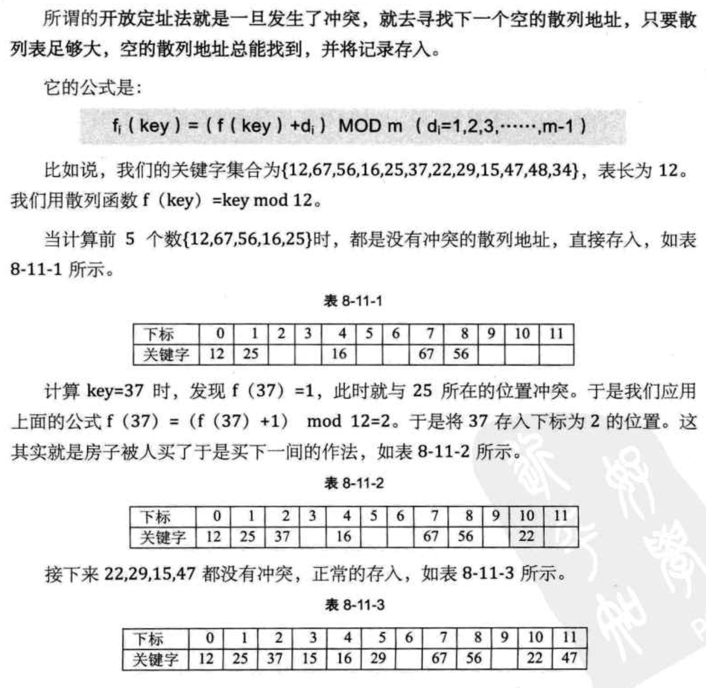

《大话数据结构》学习
《大话数据结构》学习之八：查找
8. 查找
8.1. 开场白
8.2. 查找概论
查找表（Search Table）是由同一类型的数据元素（或记录）构成的集合。 如下图所示就是一个查找表：
关键字（Key）是数据元素中某个数据项的值，又称为键值，用它可以标识一个数据元素，也可以标识一个记录的某个数据项（字段），称为关键码，如上图中的①和②。
若关键字可以唯一地标识一个记录，称此关键字为主关键字（Primary Key）。意味着对不同的记录其主关键字均不相同。主关键字所在的数据项称为主关键码，如③和④。
可以识别多个数据元素（或记录）的关键字，称为次关键字（SecondaryKey），如⑤。可以理解为是不以唯一标识一个数据元素（或记录）的关键字，对应的数据项就是次关键码。
查找（Searching）是根据给定的某个值，在查找表中确定一个其关键字等于给定值的数据元素（或记录）。
若表中存在这样的一个记录，则称查找是成功的，此时查找的结果给出整个记录的信息，或指示该记录在查找表中的位置。比如查找主关键码“代码”的主关键字为 “sh601398” 的记录时，得到第 2 条唯一记录。查找次关键码“涨跌额”为 “-0.11” 的记录时，得到两条记录。
若表中不存在关键字等于给定值的记录，称查找不成功，此时查找的结果可给出一个“空”记录或“空”指针。
查找表按照操作方式来分有两大种：
- 静态查找表（Static Search Table）：只作查找操作的查找表。
主要操作：
-
查询某个“特定的”数据元素是否在查找表中；
-
检索某个“特定的”数据元素和各种属性。
-
动态查找表（Dynamic Search Table）：在查找过程中同时插入查找表中不存在的数据元素，或者从查找表中删除已经存在的某个数据元素。
主要操作：
- 查找时插入数据元素；
- 查找时删除数据元素。
为了提高查找的效率，我们需要专门为查找操作设置数据结构，这种面向查找操作的数据结构称为查找结构。
8.3. 顺序表查找
顺序查找（Sequential Search）又叫线性查找，是最基本的查找技术。
查找过程是：
- 从表中第一个（或最后一个）记录开始，逐个进行记录的关键字和给定值比较；
- 若某个记录的关键字和给定值相等，则查找成功，找到所查的记录；
- 如果直到最后一个（或第一个）记录，其关键字和给定值比较都不等时，则表中没有所查的记录，查找不成功。
8.3.1. 顺序表查找算法
顺序查找的算法：
/* 顺序查找，a为数组，n为要查找的数组长度， key为要查找的关键字 */ int Sequential_Search(int *a, int n, int key) { int i; for (i = 1; i <= n; i++) if (a[i] == key) return i; return 0; }
8.3.2. 顺序表查找优化
设置一个哨兵，可以解决不需要每次让 i 与 n 作比较。
改进后的顺序查找算法：
/* 有哨兵顺序查找 */ int Sequential_Search2(int *a, int n, int key) { int i; /* 设置a[0]为关键字值，我们称之为“哨兵” */ a[0] = key; /* 循环从数组尾部开始 */ i = n; while (a[i] != key) i--; /* 返回0则说明查找失败 */ return i; }
更多内容（如对源码的解析等）详见书籍。
时间复杂度为 。
顺序查找技术 n 很大时，查找效率极为低下，不过优点是算法非常简单，对静态查找表的记录没有任何要求，在一些小型数据的查找时，是可以适用的。
由于查找概率的不同，将容易查找到的记录放在前面，不常用的记录放置在后面，效率可以大幅提高。
8.4. 有序表查找
8.4.1. 折半查找
折半查找（Binary Search）技术，又称为二分查找。前提是线性表中的记录必须是关键码有序（通常从小到大有序），线性表必须采用顺序存储。
折半查找的基本思想： 在有序表中，取中间记录作为比较对象，若给定值与中间记录的关键字相等，则查找成功；若给定值小于中间记录的关键字，则在中间记录的左半区继续查找；若给定值大于中间记录的关键字，则在中间记录的右半区继续查找。不断重复上述过程，直到查找成功，或所有查找区域无记录，查找失败为止。
有序表数组 {0,1,16,24,35,47,59,62,73,88,99}，除 0 下标外共 10 个数字。对它进行查找是否存在 62 这个数。
/* 折半查找 */ int Binary_Search(int *a, int n, int key) { int low, high, mid; /* 定义最低下标为记录首位 */ low = 1; /* 定义最高下标为记录末位 */ high = n; while (low <= high) { /* 折半 */ mid = (low + high) / 2; /* 若查找值比中值小 */ if (key < a[mid]) /* 最高下标调整到中位下标小一位 */ high = mid - 1; /* 若查找值比中值大 */ else if (key > a[mid]) /* 最低下标调整到中位下标大一位 */ low = mid + 1; else /* 若相等则说明mid即为查找到的位置 */ return mid; }
将这个数组的查找过程绘制成一棵二叉树，如果查找的关键字不是中间记录 47 的话，折半查找等于是把静态有序查找表分成了两棵子树，即查找结果只需要找其中的一半数据记录即可，等于工作量少了一半，然后继续折半查找。
折半算法的时间复杂度为 ，远远好于顺序查找的 。
不过由于折半查找的前提条件是需要有序表顺序存储，对于静态查找表，一次排序后不再变化，这样的算法已经比较好了。但对于需要频繁执行插入或删除操作的数据集来说，维护有序的排序会带来不小的工作量，那就不建议使用。
8.4.2. 插值查找
折半查找代码改进为：
折半查找算法的代码中更改如下：
mid=low+ (high-low)*(key-a[low])/(a[high]-a[low]); /* 插值 */
就得到了另一种有序表查找算法，插值查找法。
插值查找（Interpolation Search）是根据要查找的关键字 key 与查找表中最大最小记录的关键字比较后的查找方法，其核心就在于插值的计算公式 。时间复杂度是 ，对于表长较大，关键字分布又比较均匀的查找表，插值查找算法的平均性能比折半查找要好得多。反之，如果数组中数据的分布极端的不均匀，用插值查找未必是很合适的选择。
8.4.3. 斐波那契查找
更多内容详见书籍。
时间复杂度为 ，就平均性能来说，斐波那契查找要优于折半查找。如果是最坏情况，比如这里 key=1，那么始终都处于左侧长半区在查找，则查找效率要低于折半查找。
折半查找是进行加法与除法运算：
插值查找进行复杂的四则运算：
斐波那契查找是最简单加减法运算：
在海量数据的查找过程中，这种细微的差别可能会影响最终的查找效率。三种有序表的查找本质上是分隔点的选择不同，各有优劣。
8.5. 线性索引查找
数据结构的最终目的是提高数据的处理速度，索引是为了加快查找速度而设计的一种数据结构。 索引是把一个关键字与它对应的记录相关联的过程，一个索引由若干个索引项构成，每个索引项至少应包含关键字和其对应的记录在存储器中的位置等信息。
索引按照结构可以分为线性索引、树形索引和多级索引。这里只介绍线性索引技术。所谓线性索引就是将索引项集合组织为线性结构，也称为索引表。 我们重点介绍三种线性索引：稠密索引、分块索引和倒排索引。
8.5.1. 稠密索引
稠密索引是指在线性索引中，将数据集中的每个记录对应一个索引项。
对于稠密索引这个索引表来说，索引项一定是按照关键码有序的排列。
索引项有序也就意味着，我们查找关键字时，可以用到折半、插值、斐波那契等有序查找算法，大大提高了效率。
这显然是稠密索引的优点，但是如果数据集非常大，比如上亿，那也就意味着索引也得同样的数据集长度规模，对于内存有限的计算机来说，可能就需要反复去访问磁盘，查找性能反而大大下降了。
8.5.2. 分块索引
稠密索引因为索引项与数据集的记录个数相同，所以空间代价很大。为了减少索引项的个数，我们可以对数据集进行分块，使其分块有序，然后再对每一块建立一个索引项，从而减少索引项的个数。
分块有序，是把数据集的记录分成了若干块，并且这些块需要满足两个条件：
- 块内无序，即每一块内的记录不要求有序；
- 块间有序，例如，要求第二块所有记录的关键字均要大于第一块中所有记录的关键字，第三块的所有记录的关键字均要大于第二块的所有记录关键字……只有块间有序，才有可能在查找时带来效率。
对于分块有序的数据集，将每块对应一个索引项，这种索引方法叫做分块索引。
如下图所示，分块索引的索引项结构分三个数据项：
- 最大关键码，存储每一块中的最大关键字，使得在它之后的下一块中的最小关键字也能比这一块最大的关键字要大；
- 存储了块中的记录个数，以便于循环时使用；
- 用于指向块首数据元素的指针，便于开始对这一块中记录进行遍历。
在分块索引表中查找，分两步进行：
- 在分块索引表中查找要查关键字所在的块。由于分块索引表是块间有序的，很容易利用折半、插值等算法得到结果。上图的数据集中查找 62，由 57<62<96 得到 62 在第三个块中。
- 根据块首指针找到相应的块，并在块中顺序查找关键码。因为块中可以是无序的，因此只能顺序查找。
分块索引的效率比之顺序查找的 是高了不少，不过显然它与折半查找的 相比还有不小的差距。因此在确定所在块的过程中，由于块间有序，所以可以应用折半、插值等手段来提高效率。
总的来说，分块索引在兼顾了对细分块不需要有序的情况下，大大增加了整体查找的速度，所以普遍被用于数据库查找等技术的应用当中。
8.5.3. 倒排索引
索引项的通用结构是：
- 次关键码，如“英文单词”；
- 记录号表，如“文章编号”。
其中记录号表存储具有相同次关键字的所有记录的记录号（可以是指向记录的指针或者是该记录的主关键字）。这样的索引方法就是倒排索引（in-verted index）。倒排索引源于实际应用中需要根据属性（或字段、次关键码）的值来查找记录。这种索引表中的每一项都包括一个属性值和具有该属性值的各记录的地址。由于不是由记录来确定属性值，而是由属性值来确定记录的位置，因而称为倒排索引。
8.6. 二叉排序树
8.6.1. 二叉排序树查找操作
首先提供一个二叉树的结构：
/* 二叉树的二叉链表结点结构定义 */ typedef struct BiTNode /* 结点结构 */ { int data; /* 结点数据 */ struct BiTNode *lchild, *rchild; /* 左右孩子指针 */ } BiTNode, *BiTree;
二叉排序树的查找实现：
/* 递归查找二叉排序树T中是否存在key, */ /* 指针f指向T的双亲，其初始调用值为NULL */ /* 若查找成功，则指针p指向该数据元素结点，并返回TRUE */ /* 否则指针p指向查找路径上访问的最后一个结点并返回FALSE */ Status SearchBST(BiTree T, int key, BiTree f, BiTree *p) { if (!T) /* 查找不成功 */ { *p = f; return FALSE; } else if (key==T->data) /* 查找成功 */ { *p = T; return TRUE; } else if (key<T->data) return SearchBST(T->lchild, key, T, p); /* 在左子树中继续查找 */ else return SearchBST(T->rchild, key, T, p); /* 在右子树中继续查找 */ }
更多内容（如源码解析等）详见书籍。
8.6.2. 二叉排序树插入操作
更多内容详见书籍。
8.6.3. 二叉排序树删除操作
更多内容详见书籍。
8.6.4. 二叉排序树总结
二叉排序树是以链接的方式存储，保持了链接存储结构在执行插入或删除操作时不用移动元素的优点，只要找到合适的插入和删除位置后，仅需修改链接指针即可。
对于二叉排序树的查找，走的就是从根结点到要查找的结点的路径，其比较次数等于给定值的结点在二叉排序树的层数。最少为 1 次，即根结点就是要找的结点，最多不超过树的深度。
如果我们希望对一个集合按照二叉排序树查找最好是把它构建成一棵平衡的二叉排序树。这样我们就引出另一个问题，如何让二叉排序树平衡的问题。
8.7. 平衡二叉树（AVL树）
平衡二叉树（Self-Balancing Binary SearchTree或Height-Balanced Binary Search Tree），是一种二叉排序树，其中每一个节点的左子树和右子树的高度差至多等于 1。
高度平衡的二叉排序树：
- 要么它是一棵空树；
- 要么它的左子树和右子树都是平衡二叉树，且左子树和右子树的深度之差的绝对值不超过 1。
二叉树上结点的左子树深度减去右子树深度的值称为平衡因子BF（Balance Factor），平衡二叉树上所有结点的平衡因子只可能是 -1、0 和 1。只要二叉树上有一个结点的平衡因子的绝对值大于 1，则该二叉树就是不平衡的。
距离插入结点最近的，且平衡因子的绝对值大于 1 的结点为根的子树，我们称为最小不平衡子树。如下图所示，当新插入结点 37 时，距离它最近的平衡因子绝对值超过 1 的结点是 58（即它的左子树高度 2 减去右子树高度 0），所以从 58 开始以下的子树为最小不平衡子树。
8.7.1. 平衡二叉树实现原理
平衡二叉树构建的基本思想就是在构建二叉排序树的过程中，每当插入一个结点时，先检查是否因插入而破坏了树的平衡性，若是，则找出最小不平衡子树。在保持二叉排序树特性的前提下，调整最小不平衡子树中各结点之间的链接关系，进行相应的旋转，使之成为新的平衡子树。
8.7.2. 平衡二叉树实现算法
更多内容详见书籍。
如果我们需要查找的集合本身没有顺序，在频繁査找的同时也需要经常的插入和删除操作，显然我们需要构建一棵二叉排序树，但是不平衡的二叉排序树，查找效率是非常低的，因此我们需要在构建时，就让这棵二叉排序树是平衡二叉树，此时我们的查找时间复杂度就为 ，而插入和删除也为 。 这显然是比较理想的一 种动态査找表算法。
8.8. 多路查找树（B树）
多路查找树（muitl-way search tree），其每一个结点的孩子数可以多于两个，且每一个结点处可以存储多个元素。由于是查找树，所有元素之间存在某种特定的排序关系。
在这里，每一个结点可以存储多少个元素，以及它的孩子数的多少是非常关键的。为此，我们讲解它的 4 种特殊形式：2-3树、2-3-4树、B 树和 B+ 树。
8.8.1. 2-3树
2-3树是每一个结点都具有两个孩子（2 结点）或三个孩子（3结 点）的一棵多路查找树。
一个 2 结点包含一个元素和两个孩子（或没有孩子），左子树包含的元素小于该元素，右子树包含的元素大于该元素。这个 2 结点要么没有孩子，要有就有两个，不能只有一个孩子。
一个 3 结点包含一小一大两个元素和三个孩子（或没有孩子），一个 3 结点要么没有孩子，要么具有 3 个孩子。如果某个 3 结点有孩子的话，左子树包含小于较小元素的元素，右子树包含大于较大元素的元素，中间子树包含介于两元素之间的元素。
并且 2-3树中所有的叶子都在同一层次上。
如下图所示就是一棵有效的 2-3树：
事实上，2-3树复杂的地方就在于新结点的插入和已有结点的删除。毕竟，每个结点可能是 2 结点也可能是 3 结点，要保证所有叶子都在同一层次，是需要进行一番复杂操作的。
- 2-3树的插入实现
- 2-3树的删除实现
8.8.2. 2-3-4树
2-3-4树是 2-3树的概念扩展，包括了 4结点的使用。一个 4结点包含小中大三个元素和四个孩子（或没有孩子），一个 4结点要么没有孩子，要么具有 4 个孩子。如果某个 4结点有孩子的话，左子树包含小于最小元素的元素；第二子树包含大于最小元素，小于第二元素的元素；第三子树包含大于第二元素，小于最大元素的元素；右子树包含大于最大元素的元素。
8.8.3. B树
更多内容详见书籍。
8.8.4. B+树
更多内容详见书籍。
8.9. 散列表查找（哈希表）概述
8.9.1. 散列表查找定义
通过某个函数 f，使得：存储位置=f(关键字)。
这样我们就可以通过查找关键字不需要比较就可获得需要的记录的存储位置。
散列技术是在记录的存储位置和它的关键字之间建立一个确定的对应关系 f，使得每个关键字 key 对应一个存储位置 f（key）。查找时，根据这个确定的对应关系找到给定值 key 的映射 f(key)，若查找集合中存在这个记录，则必定在 f(key) 的位置上。
这里我们把这种对应关系 f 称为散列函数，又称为哈希（Hash）函数。采用散列技术将记录存储在一块连续的存储空间中，这块连续存储空间称为散列表或哈希表（Hash table）。关键字对应的记录存储位置称为散列地址。
8.9.2. 散列表查找步骤
整个散列过程其实就是两步：
-
在存储时，通过散列函数计算记录的散列地址，并按此散列地址存储该记录。不管什么记录，都需要用同一个散列函数计算出地址再存储。
-
查找记录时，通过同样的散列函数计算记录的散列地址，按此散列地址访问该记录。由于存取用的是同一个散列函数，因此结果相同。
散列技术既是一种存储方法，也是一种查找方法。散列技术的记录之间不存在逻辑关系，只与关键字有关联。散列主要是面向查找的存储结构。
散列技术最适合的求解问题是查找与给定值相等的记录。对于查找来说，简化了比较过程，效率就会大大提高。但散列技术不具备很多常规数据结构的能力。
比如那种同样的关键字，它能对应很多记录的情况，却不适合用散列技术。一个班级几十个学生，他们的性别有男有女，你用关键字“男”去查找，对应的有许多学生的记录，这显然是不合适的。只有如用班级学生的学号或者身份证号来散列存储，此时一个号码唯一对应一个学生才比较合适。
同样散列表也不适合范围查找，比如査找一个班级 18〜22 岁的同学，在散列表中没法进行。想获得表中记录的排序也不可能，像最大值、最小值等结果也都无法从散列表中计算出来。
我们说了这么多，散列函数应该如何设计？这个我们需要重点来讲解，总之设计一个简单、均匀、存储利用率高的散列函数是散列技术中最关键的问题。
另一个问题是冲突。在理想的情况下，每一个关键字，通过散列函数计算出来的地址都是不一样的，可现实中，这只是一个理想。我们时常会碰到两个关键字 key1≠key2，但是却有 f(key1)=f(key2)，这种现象我们称为冲突，并把 key1 和 key2 称为这个散列函数的同义词。 出现了冲突当然非常糟糕，那将造成数据査找错误。尽管我们可以通过精心设计的散列函数让冲突尽可能的少，但是不能完全避免。于是如何处理冲突就成了一个很重要的课题，这在我们后面也需要详细讲解。
8.10. 散列函数的构造方法
好的散列函数的两个可以参考的原则：
- 计算简单。散列函数的计算时间不应该超过其他查找技术与关键字比较的时间；
- 散列地址分布均匀。尽量让散列地址均匀地分布在存储空间中，保证存储空间的有效利用，减少为处理冲突而耗费的时间。
接下来介绍几种常用的散列函数构造方法。
8.10.1. 直接定址法
对0～100岁的人口数字统计表，对年龄这个关键字就可以直接用年龄的数字作为地址。此时f(key)=key：

统计80后出生年份的人口数，对出生年份这个关键字可以用年份减去1980来作为地址。此时f(key)=key-1980：
也就是说，我们可以取关键字的某个线性函数值为散列地址，(a、b为常数)即：
这样的散列函数优点是简单、均匀，不产生冲突，但问题是需要事先知道关键字的分布情况，适合查找表较小且连续的情况。由于这样的限制，在现实应用中，此方法虽然简单，但却并不常用。
8.10.2. 数字分析法
如果关键字是位数较多的数字，比如11位手机号前三位是接入号，一般对应不同运营商公司的子品牌；中间四位是HLR识别号，表示用户号的归属地；后四位是真正的用户号。
如果用手机号作为关键字，极有可能前7位都是相同的。那么选择后面的四位成为散列地址就是不错的选择。
如果这样的抽取工作还是容易出现冲突问题，还可以对抽取出来的数字再进行反转（如1234改成4321）、右环位移（如1234改成4123）、左环位移、甚至前两数与后两数叠加（如1234改成12+34=46）等方法。总的目的就是为了提供一个散列函数，能够合理地将关键字分配到散列表的各位置。
抽取方法是使用关键字的一部分来计算散列存储位置的方法，数字分析法通常适合处理关键字位数比较大的情况，如果事先知道关键字的分布且关键字的若干位分布较均匀，可以考虑用这个方法。
8.10.3. 平方取中法
关键字1234的平方是1522756，抽取中间的3位227用做散列地址。关键字是4321的平方就是18671041，抽取中间的3位671或710用做散列地址。
平方取中法适合于不知道关键字的分布，而位数又不是很大的情况。
8.10.4. 折叠法
折叠法是将关键字从左到右分割成位数相等的几部分（最后一部分位数不够时可以短些），然后将这几部分叠加求和，并按散列表表长，取后几位作为散列地址。
关键字9876543210，散列表表长为三位，分为四组，987|654|321|0，叠加求和987+654+321+0=1962，得到散列地址为962。
有时还不能保证分布均匀，不妨从一端向另一端来回折叠后对齐相加。比如将987和321反转，再与654和0相加，变成789+654+123+0=1566，此时散列地址为566。
折叠法事先不需要知道关键字的分布，适合关键字位数较多的情况。
8.10.5. 除留余数法
此方法为最常用的构造散列函数方法。对于散列表长为 m 的散列函数公式为：
这方法不仅可以对关键字直接取模，也可在折叠、平方取中后再取模。本方法的关键在于选择合适的 p，p 如果选得不好，可能会容易产生同义词。
对于有 12 个记录的关键字构造散列表时，就用了 f(key)=key mod 12 的方法。
极端：让 p 为 12，所有的关键字都得到了 0 这个地址数。
若散列表表长为 m，通常 p 为小于或等于表长（最好接近 m）的最小质数或不包含小于 20 质因子的合数。
8.10.6. 随机数法
选择一个随机数，取关键字的随机函数值为它的散列地址。即：
random是随机函数。当关键字的长度不等时，采用这个方法构造散列函数比较合适。
应该视不同的情况采用不同的散列函数。考虑因素：
- 计算散列地址所需的时间
- 关键字的长度
- 散列表的大小
- 关键字的分布情况
- 记录查找的频率
综合这些因素，才能决策选择哪种散列函数更合适。
8.11. 处理散列冲突的方法
8.11.1. 开放定址法

8.11.2. 再散列函数法
事先准备多个散列函数：
是不同的散列函数，每当发生散列地址冲突时，就换一个散列函数计算，这种方法能够使得关键字不产生聚集，但也增加了计算的时间。
8.11.3. 链地址法
将所有关键字为同义词的记录存储在一个单链表中，称这种表为同义词子表，在散列表中只存储所有同义词子表的头指针。
对关键字集合{12,67,56,16,25,37,22,29,15,47,48,34}，用12为除数,不存在冲突换址的问题，无论有多少个冲突，都只在当前位置给单链表增加结点。
链地址法对于可能会造成很多冲突的散列函数来说，提供了绝不会出现找不到地址的保障。也带来了查找时需要遍历单链表的性能损耗。
8.11.4. 公共溢出区法
这个方法其实就更加好理解，你不是冲突吗？好吧，凡是冲突的都跟我走，我给你们这些冲突找个地儿待着。这就如同孤儿院收留所有无家可归的孩子一样，我们为所有冲突的关键字建立了一个公共的溢出区来存放。
如关键字{37,48,34}与之前的关键字位置有冲突，将它们存储到溢出表：

在查找时，对给定值通过散列函数计算出散列地址后，先与基本表的相应位置进行比对，如果相等，则查找成功；如果不相等，则到溢出表去进行顺序查找。如果相对于基本表而言，有冲突的数据很少的情况下，公共溢出区的结构对查找性能来说还是非常高。
8.12. 散列表查找实现
8.12.1. 散列表查找算法实现
更多内容详见书籍。
8.12.2. 散列表查找性能分析
散列查找的平均查找长度取决因素：
- 散列函数是否均匀
散列函数的好坏直接影响着出现冲突的频繁程度，不过，由于不同的散列函数对同一组随机的关键字，产生冲突的可能性是相同的，因此可以不考虑它对平均查找长度的影响。
- 处理冲突的方法
相同的关键字、相同的散列函数，但处理冲突的方法不同，会使得平均查找长度不同。比如线性探测处理冲突可能会产生堆积，显然就没有二次探测法好，而链地址法处理冲突不会产生任何堆积，因而具有更佳的平均查找性能。
- 散列表的装填因子
所谓的装填因子 = 填入表中的记录个数/散列表长度。 标志着散列表的装满的程度。当填入表中的记录越多， 就越大，产生冲突的可能性就越大。如果散列表长度是 12，而填入表中的记录个数为 11，装填因子 = 11/12=0.9167，再填入最后一个关键字产生冲突的可能性就非常之大。散列表的平均查找长度取决于装填因子，而不是取决于查找集合中的记录个数。
不管记录个数 n 有多大，总可以选择一个合适的装填因子以便将平均查找长度限定在一个范围之内，此时散列查找的时间复杂度是 。通常都是将散列表的空间设置得比查找集合大，虽然是浪费了一定的空间，但换来的是查找效率的大大提升，总的来说，还是非常值得的。